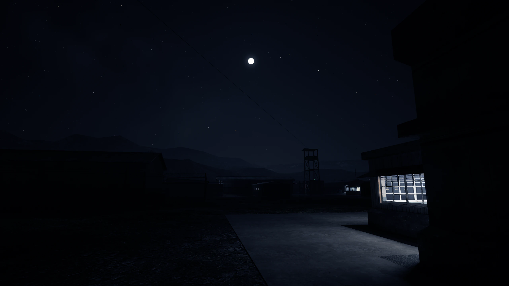

Project I.G.I.
Fourteen missions, one operative. Get Priboi out, steal Ekk's plans, find the bomb — the original Project I.G.I., in the browser, with your own copy of the game.

In the browser
Chrome, Edge, Safari · computers and phones- Nothing to install: the game's files download once and are kept for the next visit.
- Touch controls on phones and tablets.
- The original's look, the vanilla graphics preset.
Desktop launcher
Windows · macOS · Linux- Every graphics preset, up to ray-traced lighting and upscaling on supported cards.
- HD texture packs and mods, installed from the launcher.
- Keeps the game up to date by itself.
curl -fsSL https://openigi.com/install.sh | bash
> MISSION FILES [ALL 14]
Fourteen missions across Eastern Europe, from a coastline trainyard to a nuclear base.
> FIELD MANUAL
HOW TO PLAY
Choose your game above, press Play, and pick the folder the game is installed in. The files are read from your machine and nothing is uploaded. Your saves and settings are kept in the browser for the next visit.
ON THE PHONE
iPhone or iPad: open this page in Safari, tap Share, then Add to Home Screen. Android: open it in Chrome, tap the menu, then Install app. It then opens full screen from your home screen, with touch controls.
WHAT YOU NEED
A browser with WebGPU and your own copy of the game. The first visit downloads about 40 MB; after that the game is kept on your machine.